Início
Sobre Nós
Galeria
Contato
Galeria de Fotos e Vídeos
Fotos
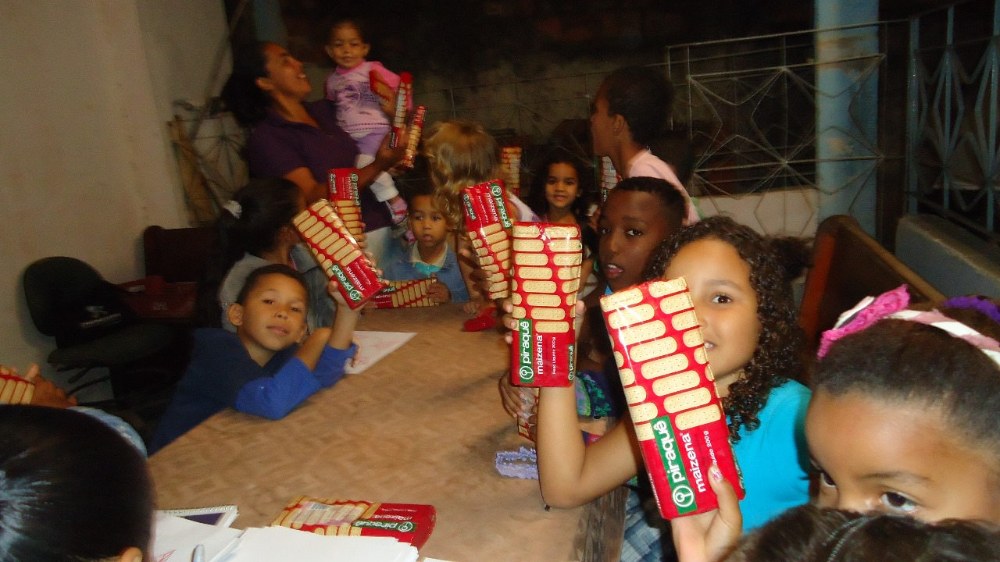 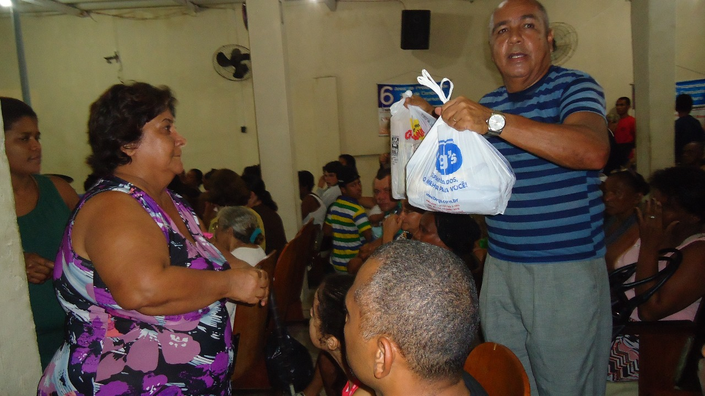 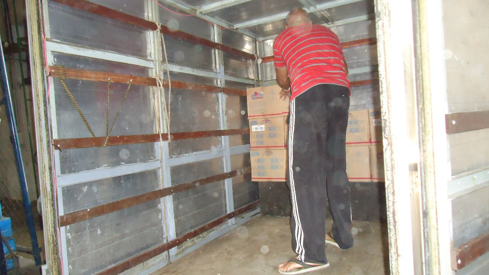 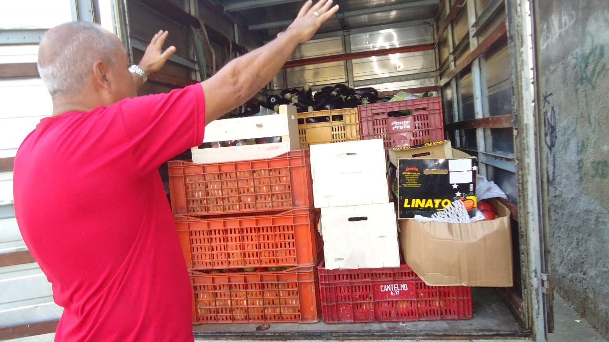 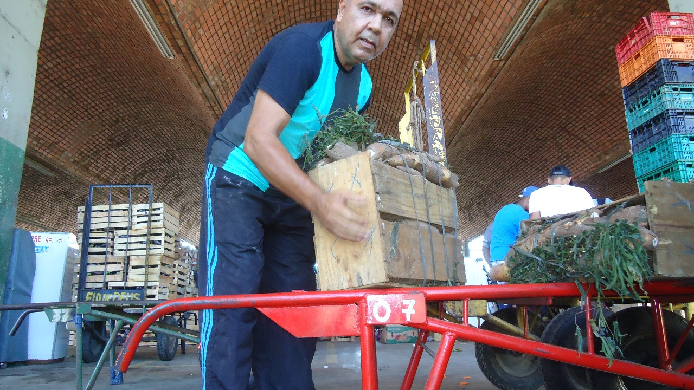 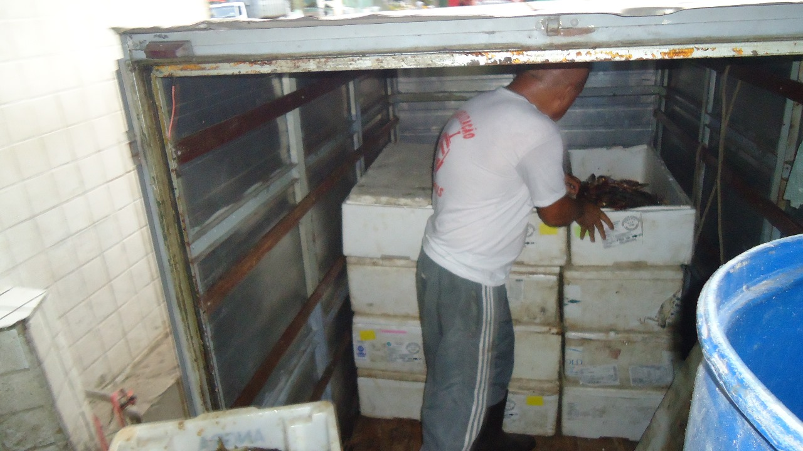 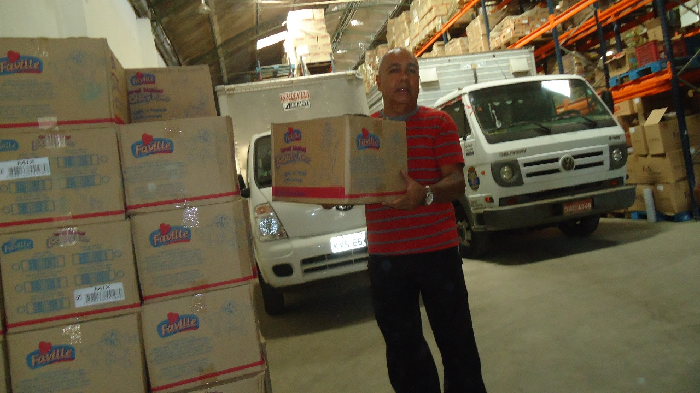 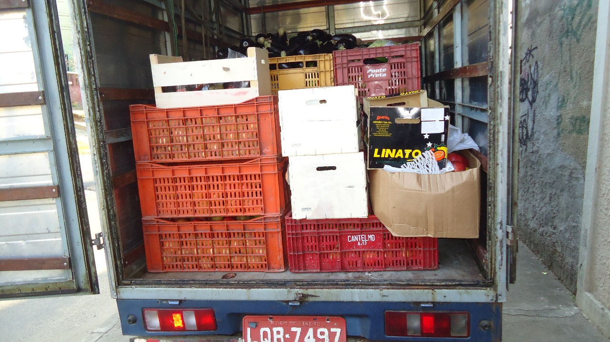 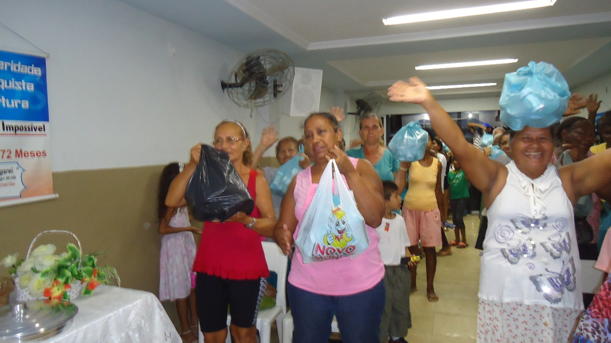 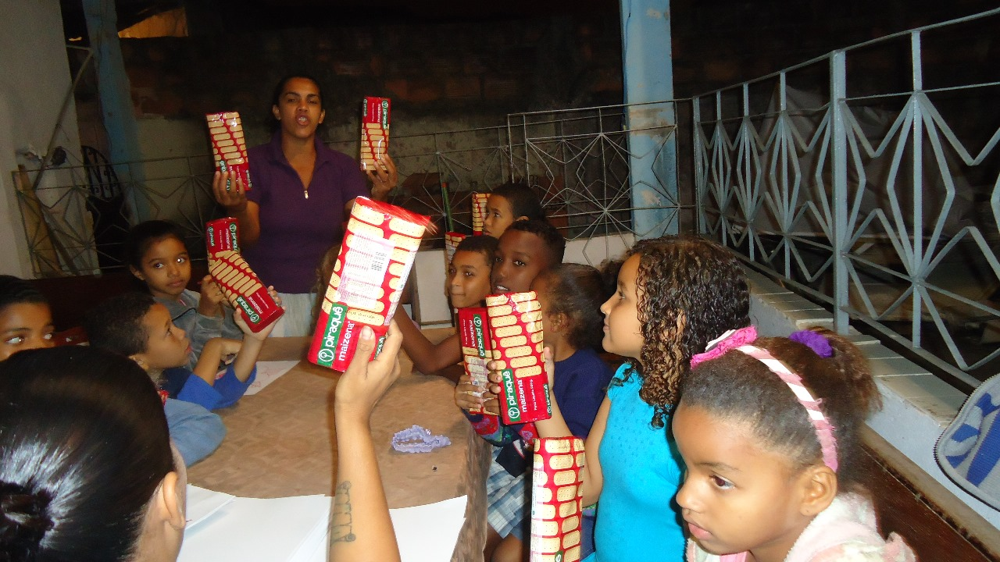 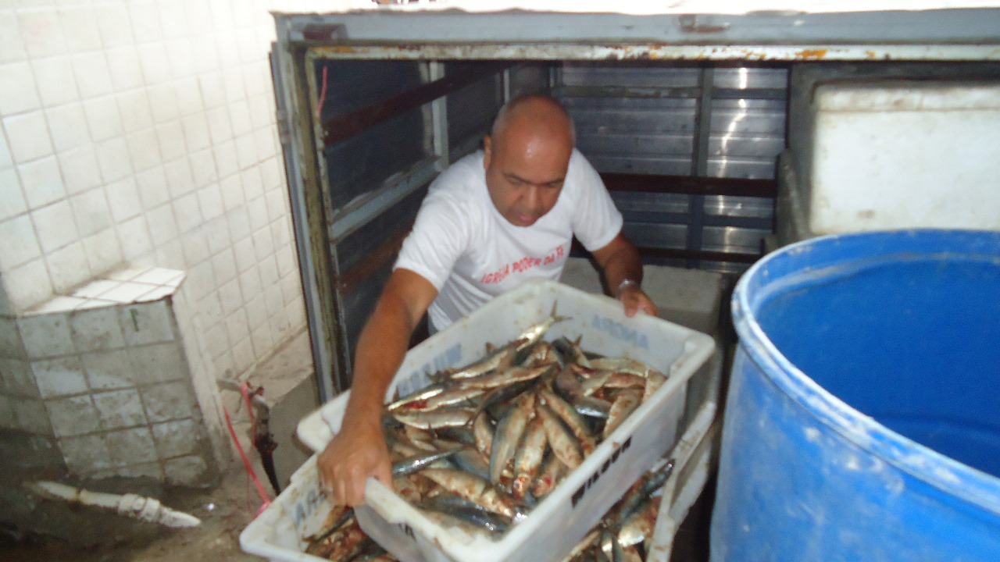 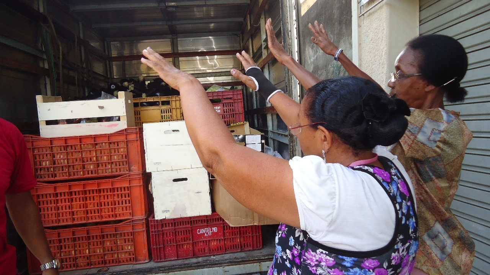
Vídeos
Seu navegador não suporta o vídeo.
Seu navegador não suporta o vídeo.
Seu navegador não suporta o vídeo.
Seu navegador não suporta o vídeo.
X